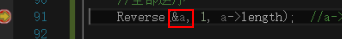
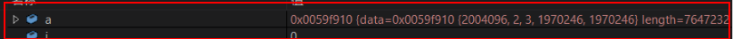
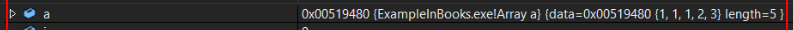

函数1
函数2
函数3
——————————————————————————————————————————————————————————————————
1调用2，将变量a的地址做实参，传给2的指针变量b。形如&a —》 *b。
2调用3，若仍以&b —》*c，则在指针变量c中，存入的是b的地址，而非b的内容value=a的地址。
应以b —》*c，将b的内容value(=a的地址)，存为指针变量c的内容，如此，c与b的功能时等价的，两者都是直接指向变量a的指针变量。
3调用4，类似……
——————————————————————————————————————————————————————————————————
函数1()
{
声明变量 a；
调用函数2(&a);
}
函数2(变量类型 *b)
{
调用函数3(b);
}
函数3(变量类型 *c){
……
}
———————————————————————————————————————————————————————————————————
错误传参


正确传参
